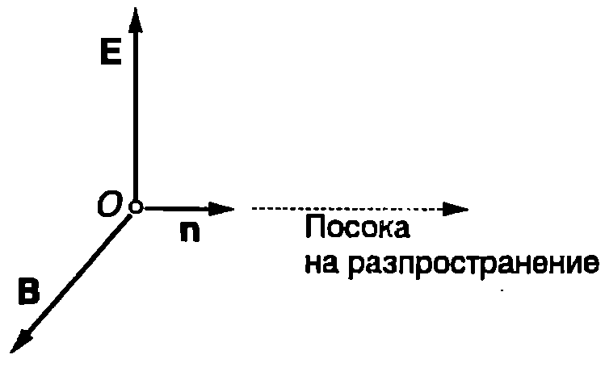
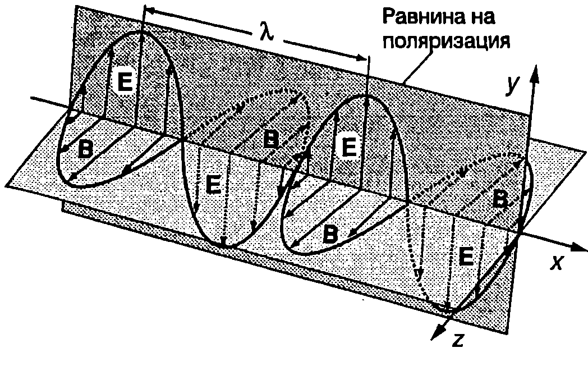
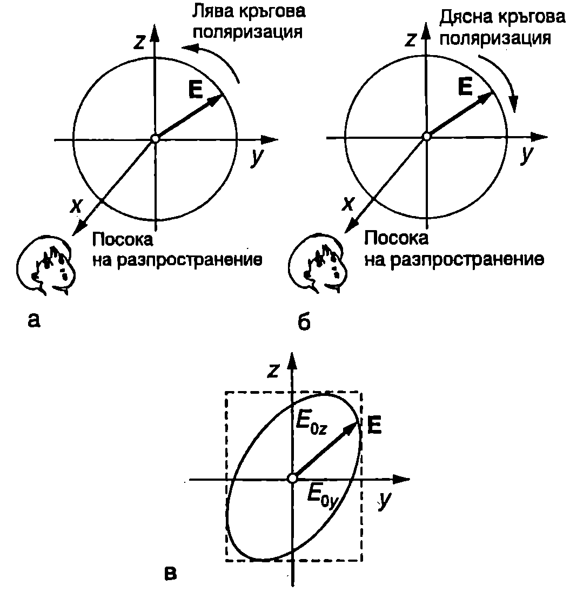

Основните характеристики на електромагнитните (ЕМ) вълни се извеждат непосредствено като следствия от уравненията на Максуел (вж. \ref{sec:68}). Строгият математичен извод обаче излиза извън рамките на задачите, които си поставя тази книга. Затова ще се ограничим само с дефиниране на основните величини, които описват ЕМ вълни, ще дадем най-важните съотношения между тях и ще ги илюстрираме с някои примери. Ще използваме също така общото в свойствата на механичните и ЕМ вълни.
Следствия от уравненията на Максуел
-
Електромагнитните вълни представляват взаимно свързани електрични и магнитни полета, които се изменят в пространството и времето. Източници на такива полета са движещи се с ускорение електрични заряди. Веднъж възникнало, променливото електромагнитно поле съществува независимо от своя източник. Измененията на електричното поле пораждат магнитно поле, а измененията на магнитното поле поддържат електричното поле. Тези изменения се предават от точка на точка и се разпространяват в пространството във вид на ЕМ вълна. В неограничена среда, подобно на бягащите механични вълни, се разпространяват бягащи ЕМ вълни. В област, ограничена например от проводящи стени, могат да възникнат стоящи ЕМ вълни. Тъй като ЕМ поле се създава както в материална среда, така и във вакум, за разлика от механичните вълни, ЕМ вълни се разпространяват и във вакуум. В този параграф ще се ограничим с разглеждането само на бягащи електромагнитни вълни във вакуум.
-
Скоростта на разпространение на ЕМ вълни във вакуум е $$c = \frac{1}{\sqrt{\varepsilon_0 \mu_0}}, $$ където $\varepsilon_0$ е електричната константа, а $\mu_0$ е магнитната константа. Тази скорост е равна на скоростта на светлината във вакум $c = 2,!99792458.10^8$ m/s.
Светлината също е ЕМ вълна. Във вакуум всички електромагнитни вълни имат една и съща фазова скорост, която не зависи от честотата.
- Електромагнитната вълна се характеризира с вектора на интензитета $\vec E$ на електричното поле и с вектора на магнитната индукция $\vec B$. В дадена точка от пространството двата вектора се изменят с течение на времето синфазно: едновременно достигат максималните си стойности и едновременно стават равни на нула. Техните моментни стойности са свързани със съотношението $$E = cB. $$
- ЕМ вълни са напречни вълни. Във всеки момент от времето за всяка точка от пространството, обхванато от вълната, векторите $\vec E$ и $\vec B$ са взаимно перпендикулярни и лежат в равнина, която е перпендикулярна на посоката на разпространение на вълната. Нека в даден момент от времето векторите $\vec E$ и $\vec B$ за ЕМ вълна в точка $O$ са насочени, както е показано на Фиг. \ref{fig:84.1}. Единичният вектор $\vec n$, който е перпендикулярен на равнината, определена от векторите $\vec E$ и $\vec B$, показва посоката на разпространение на вълната в точка $O$. От уравненията на Максуел се получава следната връзка между трите вектора: $$\vec n \times \vec E = c\vec B. $$ Векторното уравнение \eqref{eq:84.3} показва, че векторите $\vec n$, $\vec E$ и $\vec B$ са взаимно перпендикулярни и образуват дясна тройка: ако за дадена точка в определен момент от времето са известни посоките на векторите $\vec n$ и $\vec E$, посоката на $\vec B$ може да се определи по правилото на дясната ръка. Освен това от уравнение \eqref{eq:84.3} следва, че в дадена точка от ЕМ вълна векторът на интензитета $\vec E$ на електричното поле и векторът на магнитната индукция $\vec B$ се изменят синфазно, а техните моментни стойности са свързани с равенството \eqref{eq:84.2}.

`Фиг. 84.1`
Плоски монохроматични ЕМ вълни
Когато във всяка точка от ЕМ вълна проекциите на векторите $\vec E$ и $\vec B$ върху координатните оси на инерциална отправна система се изменят с течение на времето по синусов закон с една и съща кръгова честота $\omega$, вълната се нарича хармонична или монохроматична вълна. Терминът монохроматична (едноцветна) идва от субективното възприятие на човешкото око за цвят, който се определя от честотата (дължината на вълната) на светлинните вълни.
Най-прости за описване са плоските монохроматични ЕМ вълни. Както при плоските хармонични механични вълни, техните вълнови фронтове представляват успоредни равнини, които са перпендикулярни на посоката на разпространение на вълната. Да разгледаме плоска монохроматична вълна, която се разпространява по посока на оста $x$ на правоъгълна координатна система. Векторите $\vec E$ и $\vec B$ лежат в равнината $yz$ и във всеки момент от времето са взаимно перпендикулярни. Проекциите на вектора на интензитета $\vec E$ на електричното поле върху координатните оси са $$\begin{aligned} E_y &= E_{0y} \sin(\omega t - k x + \varphi_{0y});\ E z &=E_{0z} \sin( \omega t-kx+ \varphi_{0z} );\ E_x = 0 \end{aligned} $$ където $k = 2\pi/\lambda$ е вълновото число. Дължината на вълната $\lambda$, честотата $\nu = \omega/2 \pi$ и скоростта $c$ на електромагнитната вълна са свързани със същото съотношение, както при механичните вълни $$c = \lambda\nu $$ което е сила за всички видове хармонични вълни.
Пример 84.1
Сравнете честотите на звукова вълна и ЕМ вълна, които във въздуха имат еднаква дължина на вълната. \end{psexample}
Решение
Скоростта на звука във въздуха е $u = 340,\text{m/s}$, а скоростта на ЕМ вълни приблизително същата, както във вакуум: $c = 3 \times 10^8,\text{m/s}$. Тъй като $u = \lambda \nu_{\text{зв}}$ и $c = \lambda \nu_{\text{ЕМ}}$, за отношението на честотите на двете вълни, които имат еднаква дължина $\lambda$, получаваме $$\frac{\nu_{\text{ЕМ}}}{\nu_{\text{зв}}} = \frac{c}{u} = 1 \times 10^6.$$ Следователно ЕМ вълна има около един милион пъти по-висока честота от звукова вълна със същата дължина на вълната. Това се дължи на много голямата разлика в скоростите на звука и на електромагнитните вълни.
Състояние на поляризация
В общия случай амплитудите $E_{0y}$ и $E_{0z}$ на проекциите на вектора $\vec E$ и началните фази $\varphi_{0y}$ и $\varphi_{0z}$ за дадена точка от ЕМ вълна се изменят хаотично с течение на времето. Когато отношението на двете амплитуди и разликата във фазите не се изменя с течение на времето, т.е. когато $$\frac{E_{0z}}{E_{0y}} = const,\ \varphi_{0y} - \varphi_{0z} = const, $$ вълната се нарича поляризирана. Съотношенията \eqref{eq:84.6} определят състоянието на поляризация. Ако $\varphi_{0y} = \varphi_{0z}$ или $\varphi_{0y} = \varphi_{0z} + \pi$, вълната е линейно (плоско) поляризирана. При линейно поляризирана вълна електричният вектор извършва трептене в точно определено направление, което не се изменя с течение на времето. Например, при $E_{0z} = 0$, векторът $\vec E$ винаги е насочен по направление на оста $y$ (Фиг. \ref{fig:84.2}а). При $E_{0y} = E_{0z}$ и $\varphi_{0y} = \varphi_{0z}$, електричният вектор е в равнина, която сключва ъгъл $45^\circ$ с оста $y$ (Фиг. \ref{fig:84.2}б). Ако $E_{0y} = E_{0z}$ и $\varphi_{0y} = \varphi_{0z} + \pi$, ъгълът е $135^\circ$ (Фиг. \ref{fig:84.2}в).

`Фиг. 84.2`

`Фиг. 84.3`
На Фиг. \ref{fig:84.2} са показани векторите $\vec E$ и $\vec B$ в даден момент за различни точки от оста $x$, по която се разпространява линейно поляризирана плоска монохроматична вълна. Всички вектори $\vec E$ лежат в равнината $xy$, която се нарича равнина на поляризация. Равнината на поляризация се определя от посоката на разпространение на вълната и направлението, в което е насочен електричният вектор. Векторите $\vec B$ лежат в равнината $xz$ и са перпендикулярни на $\vec E$.

`Фиг. 84.4`
Когато $E_{0y} = E_{0z}$ и $\varphi_{0y} = \varphi_{0z} \pm \frac{\pi}{2}$, вълната е с кръгова поляризация. Както е известно (вж.~\ref{sec:72}), при събиране на две взаимно перпендикулярни хармонични трептения с еднакви честоти и амплитуди, между които има фазова разлика $\frac{\pi}{2}$, се получава движение по окръжност. При $\varphi_{0y} = \varphi_{0z} + \frac{\pi}{2}$, гледано срещу посоката на разпространение на вълната (Фиг. \ref{fig:84.4}а), електричният вектор описва окръжност, движейки се в противоположната на часовата стрелка посока. В този случай вълната е с лява кръгова поляризация. Ако $\varphi_{0y} = \varphi_{0z} - \frac{\pi}{2}$, векторът $\vec E$ описва окръжност, като се върти по посока на часовата стрелка (Фиг. \ref{fig:84.4}б): вълната е с дясна кръгова поляризация.
В общия случай $\frac{E_{0y}}{E_{0z}} = \text{const}$ и $\varphi_{0y} - \varphi_{0z} = \Delta\varphi_0$, където $\Delta\varphi_0$ е произволна, но постоянна фазова разлика. Такава вълна е елиптично поляризирана — електричният вектор описва елипса (Фиг. \ref{fig:84.4}в).
Вълна с произволна, в общия случай елиптична поляризация, може да се представи като суперпозиция от две линейно поляризирани в две взаимно перпендикулярни направления вълни или като суперпозиция от две кръгово поляризирани вълни: едната с лява, а другата с дясна кръгова поляризация. В зависимост от характера на задачата, която се решава, може да се предпочете едното или другото представяне. Неполяризираните вълни, например естествената светлина от Слънцето, формално също могат да се разглеждат като суперпозиция от две линейно поляризирани във взаимно перпендикулярни направления вълни с еднакви амплитуди, фазовата разлика между които обаче се изменя хаотично с течение на времето.
Задачи
-
Максималната стойност на интензитета на електричното поле на електромагнитна вълна, която се разпространява във вакуум, е 200 V/m. Колко е максималната стойност на магнитната индукция?
-
Определете отношението $E/H$ на интензитетите на електричното поле ($E$) и на магнитното поле ($H$) за електромагнитна вълна, която се разпространява във вакуум.